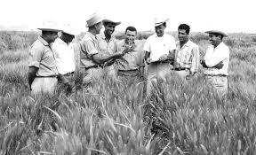

Dr Norman Bolaug
The man who saved a billion lives

Dr Norman Bolaug, second from left,trains biologist in mexico
Here is a time line of Dr.Borlaug's life:
- 1944 -Born in cresco Iowa.
- 1943 -Leave him family's farm to attend the university of Minnesota,thanks to a depression era program known as the"National Youth Administration".
- 1935 -Has to stop school and saved up more money.Works in the civilian conversation corps,helping sterving America."I saw how food changed them",he said."All of this left scared on me.
- 1937 -Finishes university and takes a job in US Forestry service .
- 1938 -Marries Wife of 69 years Marget Gibson.Get laids off due to budgets cutts.Inspired by Elvin Charles Stakman,He returned to school study under Stakman,Who teaches about breeding pest-resistent plants.
- 1941 -Tries to enroll in the militry after the pearl Harbor attack,but is rejected.Instead.The ask his lab to work on waterproof glue. DDT to control malaria,desenfectants,and other applied science.
- 1942 -Recieved a Ph.D. in genetics and Plant Pathology.
- 1944 -Rejects a 100% salary increase from Dupont.leaves his pregnant wife behīnd,and flis to Mexico to head a new plant pathology program. Over the next 16 years,his team breeds 6,000 different strains of diseases resistent wheat - including different varieties for each major climate on Earth.
- 1945 -Discovers a way to grown wheat twice each season, doubling wheat yield.
- 1953 -Crosses a short,sturdy dwarf breed of wheat with a high-yielding American breed, Creating a strains that responds well to fertalizer.It goes on to provide of 95% Mexico's wheat.
- 1962 -Visits Delhi and briñgs his high-yielding strains of wheat to the indian subcontinent in time to help maatigte mass starvation due to a rapidly expanding population.
- 1970 -Recieved the noble peace prize.
- 1983 -helps seven africn countrie dramatically increase their maize and sorghum yield.
- 1984 -Becomes a distingushed professor at Taxes A&M university.
- 2005 -states"we will have to double the world food supply by 2050". Agues that genetically modified corps are the only way we can meet the demand,as we ran out of arable land.Say that GM crops are not inherently dangerous because"we've been genetically modifying plants and animals for long time. Long before we called it science,people were selecting the best breeds.
- 2009 -dies at the age of 95.
Bolaug's life and achievement are testimony to the far-reaching contribution that one man towering interllect,persistence scientific vision can make to human peace and progress.
--Indian Prime Minister Manmohan Singh
If you have time,you should read more about this incredible human being on his Wikipedia entry